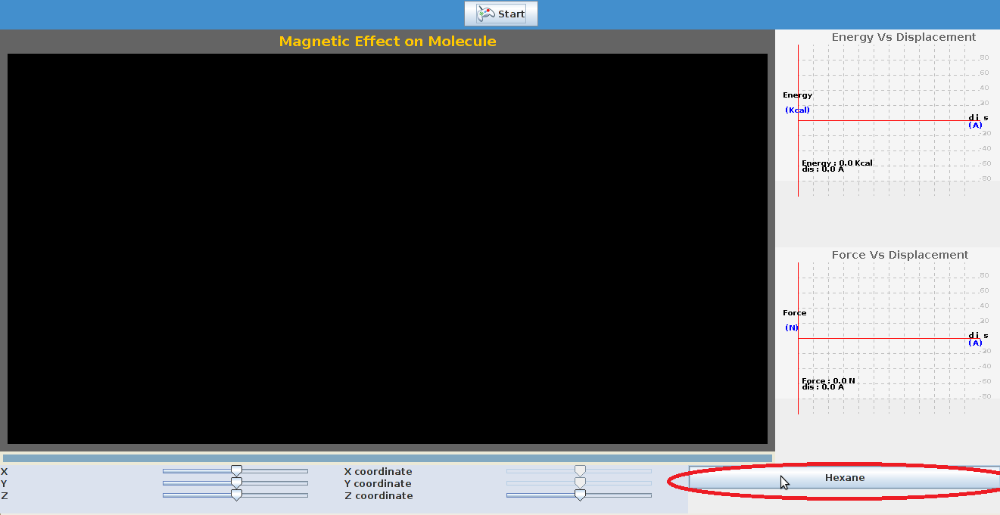
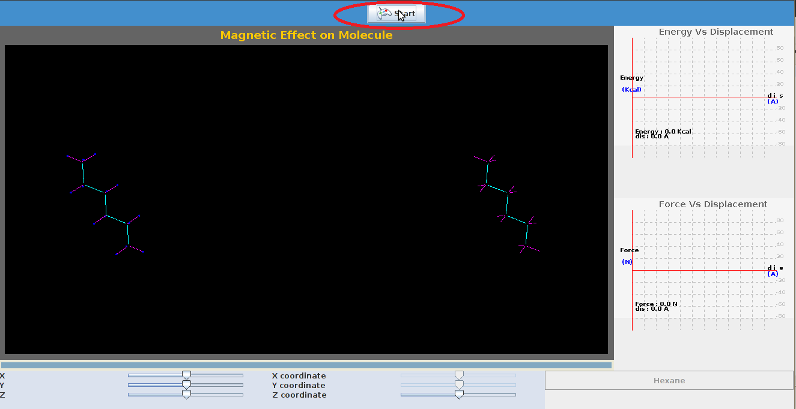
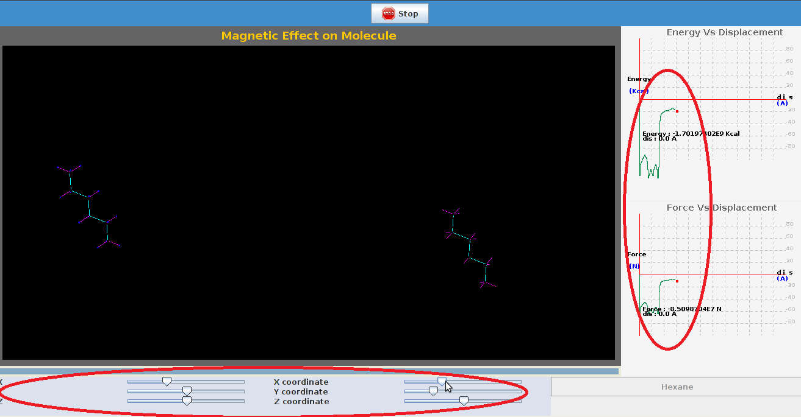

Electronegative atoms attract electrons more than electropositive atoms.This gives rise to uneven charge distribution in the molecule,The most common ways to represent charge distribution as point charges localised in the molecule.We then use coloumb's potential for point charges to estimate the forces between charged portions and uncharged portions.

Electrostatic forces only exist between molecules with permanent moments of their charge distribution.Molecules do not have to distort or fluctuate in order to exhibit electrostatic intermolecular forces.
Intermolecular forces are longest-ranged (act strongly over a large distance) when they are electrostatic.
COULOMB'S LAW :
The scalar form of Coulomb's law is an expression for the magnitude and sign of the electrostatic force between two idealized point charges, small in size compared to their separation.
This force (F) acting simultaneously on point charges (q1) and (q2), is given by

where r is the separation distance and ke is a proportionality constant.
A positive force implies it is repulsive, while a negative force implies it is attractive.The proportionality constant ke, called the Coulomb constant (sometimes called the Coulomb force constant),
Coulomb's law holds even within the atoms, correctly describing the force between the positively charged nucleus and
each of the negatively charged electrons. This simple law also correctly accounts for the forces that bind
atoms together to form molecules and for the forces that bind atoms and molecules together to form solids and liquids.
The electrostatic interaction between two charges is given by Coulomb’s law,
where qi, qj are the partial atomic charges, ke is the effective dielectric constant and rij is the relative distance between the two particles.
F=ke*qiqj/r2
The electrical potential energy for m no of molecules interacting with n no of molecules is given by
U=∑imk*qQ/r

To explain electrostatic interactions between molecules


| Step1:Select the molecule by clicking |
|  |
| STEP2:Click 'Start' to start the experiment. |
|  |
| Step 3: The positions of molecules can be varied by varying the coordinates on sliders,a plot of energy,force is seen. |
|  |


- P.W atkins "Physical chemistry"
- Intermolecular forces by Jacob N.Israelachvili
- Principles and Practice of Chromatography by Raymond P. W. Scott,
- http://www.wellesley.edu/Chemistry/chem211lab/Orgo_Lab_Manual/Appendix/Techniques/TLC/thin_layer_chrom.html
- http://ww2.chemistry.gatech.edu/~lw26/structure/molecular_interactions/mol_int.html#B
- http://www.studyhplc.com/thechromatographicprinciple.php
- http://www.chemguide.co.uk/analysis/chromatography/column.html
- “Chromatography Techinques” by Anil K chopra.
- http://en.wikipedia.org/wiki/Column_chromatography